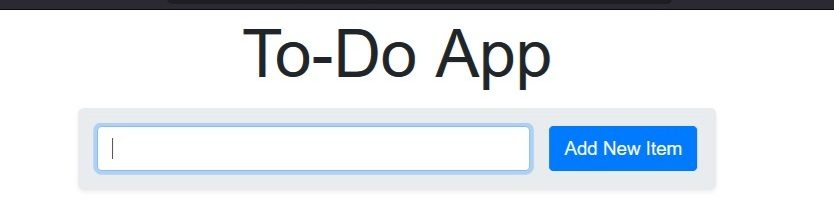
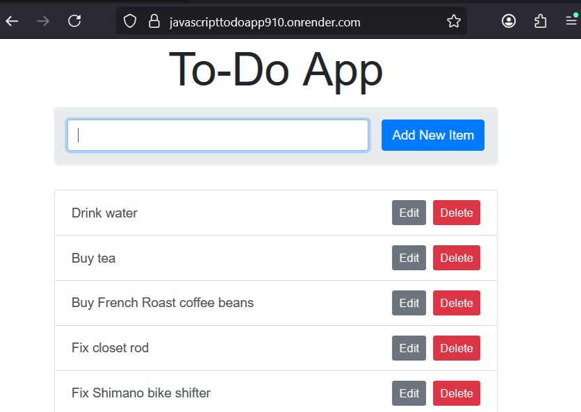
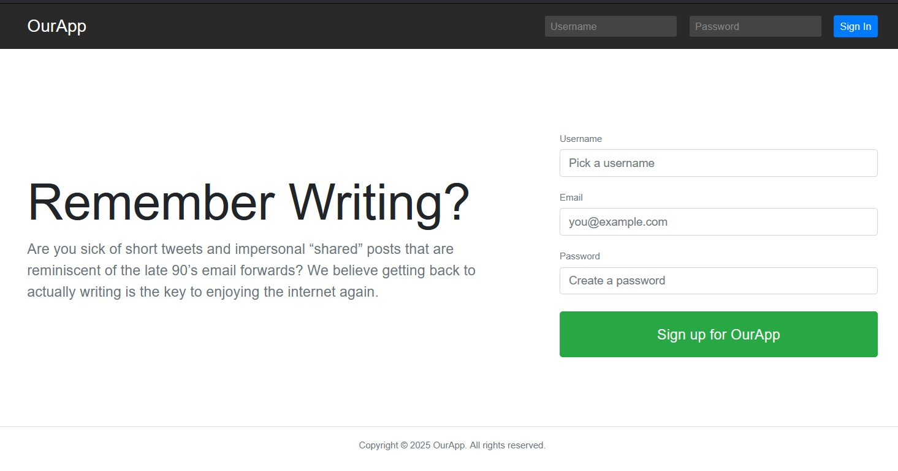
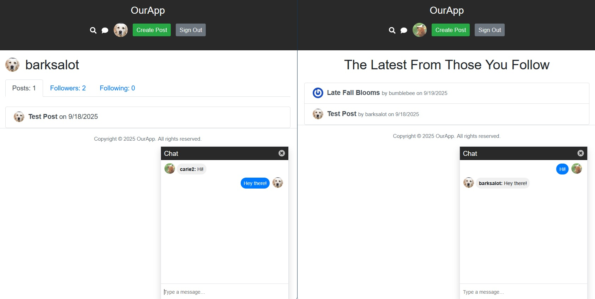
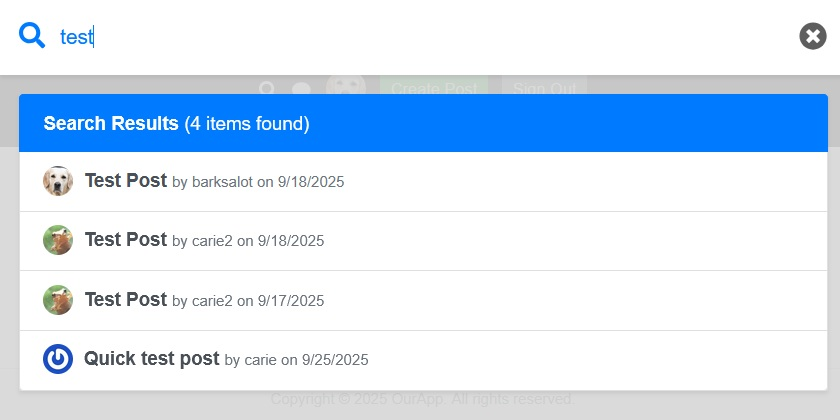
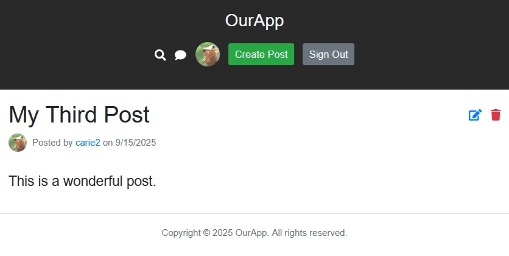

Project: Express.js
Tech Stack: MongoDB, Express.js, and Node
Two Cloud-based Express.js Web Apps
Interested in making a web app to deploy to the cloud for free? It's doable! I did it.
Contents
Intro Web App Functionality Architecture Cloud Deployment Security Topics Development Environment Conclusion ResourcesIntro
This is the story of two web apps: The first is a very simple proof-of-concept while the second is more robust and includes socket functionality for a chat feature. Both use free MongoDB Atlas database access, Express.js, the Node JavaScript environment, and both are deployed with a free Render.com account and GitHub.
Read on for an overview of each app and some notes on the MongoDB-Express-Node architecture involved!
Web App Functionality
Of the two web apps, the first is a simple To-Do app that stores ‘items’ for a To-Do list in a MongoDB collection and performs CRUD (create-read-update-delete) operations on the items.
Simple To-Do App
This web app has:
- A simple response authorization prompt that provides security
- 1 page - 1 form - 1 field - 1 submit button
- To the right of each task are edit and delete buttons where, as expected, clicking edit pops up a dialog box for entering changes, while clicking delete pops up an 'Are you sure?' prompt that results in a cancel or commit.
- Simple functionality: enter a task in the field, click submit, and the task is added to the bottom of the list.
Why start so simple? As a proof-of-concept, this app is database-connected, cloud-deployed, and built in the Node environment with Express.js.
Complex Web App
The second app described below is a more complex implementation that provides Registration and Login, a Live Search feature, a Following/Followers/Feed mechanism, a socket-based Chat feature, and the standard (but text-only) Post creation/updating/deletion behavior experienced on social networking sites. Additionally, emails can be sent on post creation or other transactional triggers.
Registration/Login page where sessions/users are persisted to a MongoDB collection.

Home page dashboard includes a user feed from followed accounts.
Chat feature implements socket.io library
Live Search overlay with test results

Profile page: Posts, Followers, Following Lists
Posts - Create, Read, Update, Delete
Architecture
MVC Architecture in a JavaScript Full Stack Web App
The Complex App is structured using a Model-View-Controller (MVC) architecture:
- Models: Post, User, Follow
- Views: home-guest.ejs, home-dashboard.ejs, profile.ejs, 404.ejs, etc.
- Controllers: postController, userController, followController
- The Express app object and database object provide central logic and control.
Database Connections and Asynchronous Calls
Database connection and calls are handled with asynchronous calls in the ‘Complex’ App. Both the server and the client are interacting with the database:
- On the client side, the Axios library provides database connectivity
- On the server side, the mongodb and connect-mongo packages are used.
The ‘dotenv’ package allows connection details to be held in one place, enabling clearer transfer between environments (for example when switching databases) and better security. While Promises have largely replaced callback functions for asynchronous calls, there are still alternate approaches to be found in the then().catch() syntax and the async/await approach. Below is an example of the async/await syntax from the app’s create post method.
Example async/await syntax with try{} and catch{} blocks:
Post.prototype.create = async function () {
this.cleanUp()
this.validate()
if (!this.errors.length) {
// save post into database
try {
const info = await postsCollection.insertOne(this.data)
return info.insertedId
} catch (err) {
this.errors.push("Please try again later.")
throw this.errors
}
} else {
throw this.errors
}
}
Express Router
Using the Express Router provides central control for managing app routes and flow as in the following call for creating a new post:
router.get("/create-post", userController.mustBeLoggedIn, postController.viewCreateScreen)
Multi-Page (MPA) vs. Single-Page-Application (SPA)
Initially, these are both Multi-Page architecture apps, however, it is possible to create SPA behavior by capturing the onclick and onblur events and rerender the intended destinations within the header and footer of the single page. This can be easily tested when the chat box is up. If the chat remains on ‘top’ when the user switches between internal ‘pages’ or routes, then it is an SPA structure, however, when the chat disappears on navigation, this reflects the MPA implementation.
Adding SMTP/Mail Support
Including the resend package and creating a new Resend object (initialized with the RESEND_API_KEY) provided a way to send emails after a successful post creation via the resend.emails.send() function.
I was not able to successfully create a free account with SendGrid, but was able to get an alternative to work using Resend.com's free account. It was quick and intuitive:
- I created a free account with Resend
- On their onboarding page, I clicked to create an API and waited (a bit long? < 10 min)
- I copied that key, and in the .env file created a line that said
RESENDAPIKEY=
- I ran npm install resend, and then restarted the app with npm run watch
- In postController.com (Yes, import would have been better, but was matching the coding style.)
const { Resend } = require("resend") const resend = new Resend(process.env.RESENDAPIKEY) - In the
exports.createfunction add:resend.emails.send({ from: "onboarding@resend.dev", to: "", subject: "New Post", html: " Post was created successfully!
" })
Cloud Deployment
By saving the codebase in a GitHub repository, it could be easily pushed up onto render.com and deployed in a cloud-based environment: the MongoDB Atlas account is running on AWS servers, and both the server-side code and public client-side code are hosted on render.com.
The components involved were free options:
- A Git/GitHub free account and private repository
- A Render.com free account - for creating a new web service, from the dashboard, it was possible to log into GitHub with credentials and choose the repository.
- A Mongodb Atlas free account
- MongoDB is a NoSQL-type of database that uses clusters and collections.
- Using a .env file to store the database string served two purposes: better security as well as portability when moving code to another environment.
Just a note on wake-up delays with the free account: This can take 30+ seconds to ‘wake-up’ due to the free account.
Security Topics
There are a number of security topics to note with these projects.
User input sanitization and validation (both for registration/login and for post creation) is handled with both server-side and client-side code. On the server side, sanitize-html is used in addition to field validation checks such as ‘username, email and password cannot be blank,’ ‘email format must be in the regular format,’ and ‘minimum and maximum lengths for field entries enforced.’ Database checks are also performed to ensure that username and emails are unique. Client-side Axios database checks provide a second layer of validation, and DOMPurify is also used.
.env file usage, supported by the dotenv package, provides security for database connection strings and other logins or API keys such as the resend API key.
Using sameSite: “strict” session settings addresses the cross-site request forgery concerns for which the deprecated Express csurf package had been formerly used.
The posts are all public, so that logged in users can search on topics of interest and ‘follow’ users whose content they want. Implementing further security or privacy for posts would involve adding privacy settings.
Development Environment
In addition to Visual Studio Code with GitHub, Nodemon and Webpack were used to bundle and automate the process.
Conclusion
Worth every bit of effort, these two web apps provide the cloud-based JavaScript Full-Stack experience (using Express.js) before using JavaScript Frameworks such as React, Angular, or Vue. Building them gives a familiarity with the full stack ecosystem of JavaScript on both the client and server sides, using Webpack to bundle, MongoDB as a database, and cloud-based options to deploy. A great proof-of-concept to build on, whether the next step is a JavaScript framework or full stack JavaScript!
Resources
- Brad Schiff’s JavaScript Full Stack from Scratch Tutorial on Udemy.com
- MarkDown Guide
- Express.js v 5
- Postman (used for testing request/response parameters)